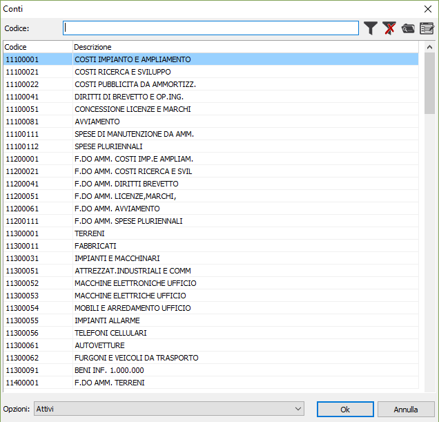
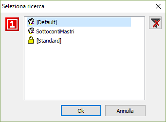
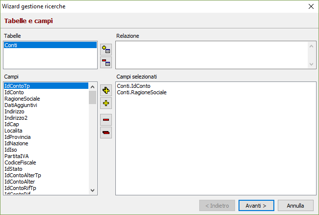
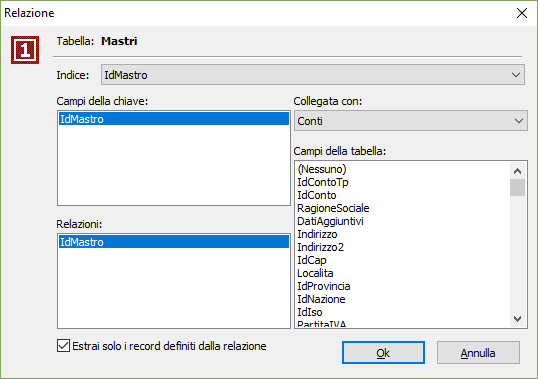
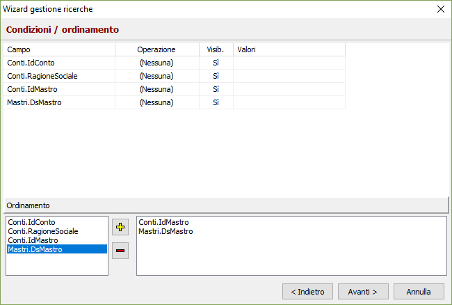
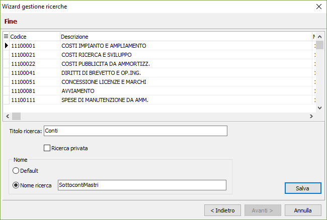

Ricerche a video
OS1 prevede la possibilità di effettuare ricerche a video sia nei programmi di manutenzione tabelle, sia nei programmi applicativi, allo scopo di facilitare l'individuazione delle informazioni necessarie.
Normalmente i campi su cui è possibile effettuare le ricerche sono i campi destinati a contenere un codice. Premendo il tasto funzione F9 si aprirà la finestra di ricerca.

La finestra presenta in primo luogo un campo alfanumerico, che può essere preceduto dall'etichetta Codice oppure Descrizione secondo quanto previsto dalla personalizzazione presente nella scelta Opzioni del menù File. In tale campo è possibile digitare, completamente o parzialmente, il codice (o la descrizione, se l'etichetta lo prevede) da ricercare. È anche possibile effettuare la ricerca anche all'interno della descrizione o del codice, premettendo al testo da ricercare il carattere jolly, ovvero * (asterisco). A conferma, verrà visualizzato l'elenco degli elementi della tabella corrispondenti ai valori da ricercare. Per cambiare la chiave di ricerca primaria, è possibile utilizzare i tasti Freccia destra o Freccia sinistra. A ciascuna pressione di tasto si vedrà cambiare la chiave di ricerca, fra quelle possibili rappresentate dai titoli delle varie colonne su cui si articola la Vista o Zoom. Analogo risultato si ottiene cliccando con il mouse sulle etichette delle varie colonne su cui si articola la Vista o Zoom. Esiste la possibilità di applicare più filtri consecutivamente: ad esempio è possibile effettuare la ricerca del cliente per ragione sociale indicando ROSSI nel campo Ragione sociale e cliccando sul  bottone Applica filtro (o premendo il tasto Invio) e successivamente posizionando sulla colonna Località e digitando il valore Milano cercare solo i clienti ROSSI che hanno Milano nel campo Località. Per eliminare i filtri applicati è sufficiente utilizzare il bottone Elimina filtro.
bottone Applica filtro (o premendo il tasto Invio) e successivamente posizionando sulla colonna Località e digitando il valore Milano cercare solo i clienti ROSSI che hanno Milano nel campo Località. Per eliminare i filtri applicati è sufficiente utilizzare il bottone Elimina filtro.

Il pulsante Apri consente di selezionare una ricerca specifica fra quelle esistenti. Appare la finestra mostrata a lato nella quale sono presenti le ricerche disponibili per la tabella selezionata. In questa fase è  anche possibile scegliere di eliminare una ricerca tramite il pulsante Elimina. La ricerca [Standard] è quella originariamente presente in OS1, la ricerca [Default] è quella che viene utilizzata automaticamente alla pressione del tasto F9 o del pulsante Ricerca.
anche possibile scegliere di eliminare una ricerca tramite il pulsante Elimina. La ricerca [Standard] è quella originariamente presente in OS1, la ricerca [Default] è quella che viene utilizzata automaticamente alla pressione del tasto F9 o del pulsante Ricerca.
Il pulsante Modifica consente di creare nuove ricerche o modificare quelle esistenti. Premendo il pulsante si accede ad una serie di finestre in sequenza che porteranno alla modifica oppure alla composizione di una ricerca in step successivi.
Step 1

Da questa finestra è possibile gestire le tabelle ed i relativi campi che andranno a comporre la ricerca; i pulsanti presenti consentono di aggiungere o togliere uno o più campi oppure una tabella. Una volta terminata la selezione dei campi, la cui disposizione definisce la visualizzazione nella griglia, è necessario premere Avanti per passare allo step successivo. Aggiungendo una tabella, viene richiesto di selezionare il nome tra quelle presenti e successivamente si accede alla seguente finestra:

In questa finestra è possibile definire le relazioni che legano la tabella selezionata a quella già presente sulla ricerca; in questo modo i campi della nuova tabella saranno resi disponibili per la composizione della ricerca. Terminata la fase di associazione si ritorna alla finestra precedente.
Step 2

Il passaggio successivo consente di determinare quali tra i campi selezionati devono essere visualizzati e se utilizzare dei criteri di selezione ulteriori per la ricerca, quali ad esempio un campo compreso fra due valori oppure uguale ad un valore specifico. La sezione inferiore consente invece di determinare l'ordinamento di partenza della ricerca. La pressione del pulsante Avanti conduce allo step successivo ed ultimo.
Step 3

La sezione finale visualizza l'anteprima della ricerca che abbiamo preparato; in questa fase è possibile modificare la dimensione delle colonne tramite mouse, con doppio clic sulla colonna è possibile modificarne anche il titolo. Nel campo 'Titolo ricerca' deve essere inserito il titolo, che comparirà nell'intestazione della finestra; se la ricerca viene definita privata (casella di spunta), questa sarà disponibile solo per l'utente che l'ha realizzata altrimenti sarà utilizzabile da tutti gli utenti.
Se la ricerca viene salvata come Default, diventerà la ricerca abituale che comparirà alla pressione del tasto F9 o del pulsante Ricerca all'interno di OS1; altrimenti dandole un nome specifico dovrà essere aperta manualmente ogni volta che si vorrà utilizzarla. La pressione del pulsante Salva termina la creazione o modifica della ricerca, la pressione del pulsante Annulla, interrompe le modifiche effettuate annullandole completamente.